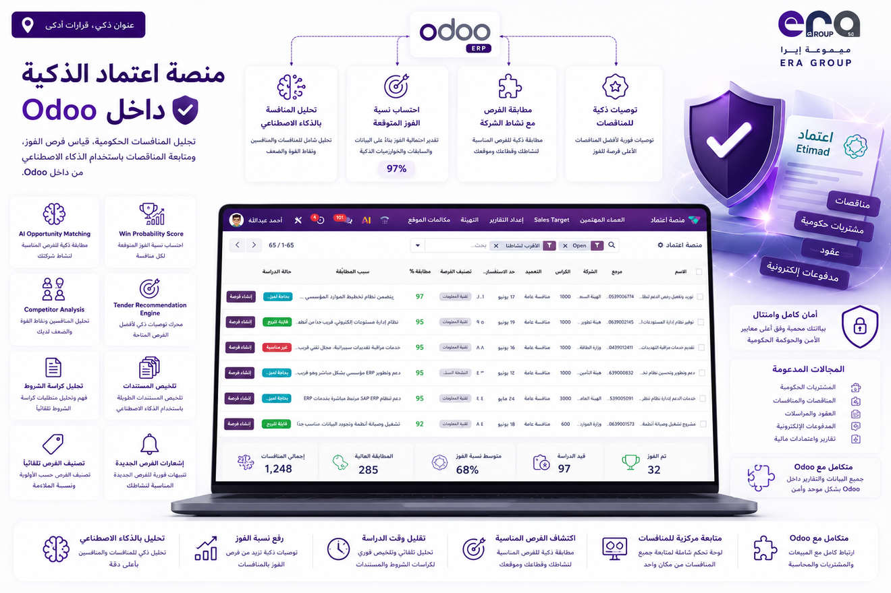

Right now, tenders you could win are quietly closing on Forsah and Etimad — and your team doesn't even know they exist. Not anymore. Every new opportunity flows straight into your CRM, ranked by how well it fits your business, so your team chases only the bids worth winning and turns the best ones into live deals in a single click.
في هذه اللحظة، هناك مناقصات تستطيع الفوز بها توشك أن تُغلق على منصتي فرصة واعتماد دون أن تسمع بها. هذا ينتهي الآن: الفرص الجديدة تتدفق إلى نظامك تلقائياً، مرتّبة حسب ملاءمتها لنشاط شركتك — فيتفرّغ فريقك للمناقصات التي تستحق، ويحوّل أفضلها إلى صفقات بنقرة واحدة.
Stop refreshing portals and praying you didn't miss the big one. Every new opportunity from Forsah and Etimad lands in your CRM by itself — your notes, tags and decisions survive every update, and closed tenders file themselves away instead of vanishing.
ودّع تحديث الصفحات والقلق من فوات الفرصة الكبيرة: كل مناقصة جديدة من فرصة واعتماد تصلك بنفسها، وملاحظاتك ووسومك وقراراتك محفوظة مهما تجدّدت البيانات — والمناقصات المغلقة تُؤرشف بنفسها بدل أن تختفي.
Push every tender down a dead-simple path — review, worth studying, not for us, won — with one-click buttons and colour-coded badges. Your whole team sees where every opportunity stands the moment they open the screen, and nothing slips through the cracks again.
قرارك في نقرة: للمراجعة ← تستحق الدراسة ← غير مناسبة ← تم الفوز — وفريقك كله يرى موقف كل مناقصة لحظة فتح الشاشة، فلا تفلت منكم فرصة بعد اليوم.
Tell us what your company does — once. From then on, every tender walks in with a 0-to-100 match score, colour-coded so the strongest fits leap off the screen. Skip the endless scroll and pour your energy into the bids you can actually win.
عرّفنا بنشاط شركتك مرة واحدة، وستصلك كل مناقصة بدرجة ملاءمة من ٠ إلى ١٠٠ تكشف لك الأنسب فوراً — فتصرف جهدك حيث الفوز أقرب.
Spot a winner, click once — it becomes a live opportunity in your pipeline, with the right contact attached and a follow-up reminder already ticking. No duplicates, no dropped balls, no "wait, who owns this one?". Your pipeline stays clean and your team stays sharp.
وجدت مناقصة واعدة؟ نقرة واحدة تحوّلها إلى فرصة حيّة في مسار مبيعاتك، بجهة الاتصال الصحيحة وتذكير متابعة جاهز — بلا تكرار، وبلا نسيان.
Slice hundreds of tenders down to the handful that matter today — by status, match score, closing date, city, government body, award method or tags. Whatever you're hunting for, it's one quick filter away, every single time.
اختصر مئات المناقصات إلى ما يهمك اليوم فقط: الحالة، درجة الملاءمة، آخر موعد، المدينة، الجهة الحكومية، طريقة الترسية أو الوسوم — كل ما تبحث عنه على بُعد نقرة.
Every screen, button, filter and message reads like it was written for your team — because it was. Zero training curve, zero confusion: everyone is productive the very first morning, in the language they already work in.
واجهة عربية أصيلة في كل شاشة وزر ورسالة — فريقك ينطلق من أول يوم، بلا تدريب وبلا حيرة، وباللغة التي يعمل بها أصلاً.
Sit back — new tenders land in your CRM on their own.
استرخِ — المناقصات الجديدة تصل إلى نظامك بنفسها.
Describe your business once — every tender arrives pre-scored.
صِف نشاطك مرة واحدة — وتصلك كل مناقصة مقيّمة سلفاً.
Click once — your best match becomes a live deal.
نقرة واحدة — وأفضل فرصة تتحول إلى صفقة حيّة.
No setup marathon, no expertise needed, nothing to babysit — it runs quietly every day, and the notes and decisions your team adds are never overwritten by an update.
بلا إعدادات معقدة، وبلا خبرة تقنية، وبلا متابعة يومية — يعمل بهدوء كل يوم، وما يسجّله فريقك من ملاحظات وقرارات لا يضيع مع أي تحديث.
No new tool to buy, learn or log into. Tenders sit right next to your leads and deals, so your sales team keeps working exactly where they already work.
لا أداة جديدة تشتريها أو تتعلمها: المناقصات تظهر جنباً إلى جنب مع عملائك وصفقاتك، وفريق مبيعاتك يواصل عمله في المكان الذي اعتاده.
Forsah and Etimad, covered end to end — government bodies, award methods, closing dates and cities, in Arabic and English from the very first screen.
فرصة واعتماد من البداية إلى النهاية: الجهات الحكومية وطرق الترسية والمواعيد والمدن — بالعربية والإنجليزية من أول شاشة.
Forsah (فرصة) & Etimad (اعتماد) — your government tender pipeline, inside Odoo CRM.
مسار مناقصاتك الحكومية من فرصة واعتماد — داخل أودو CRM.
Era Group · https://era.net.sa · License: AGPL-3